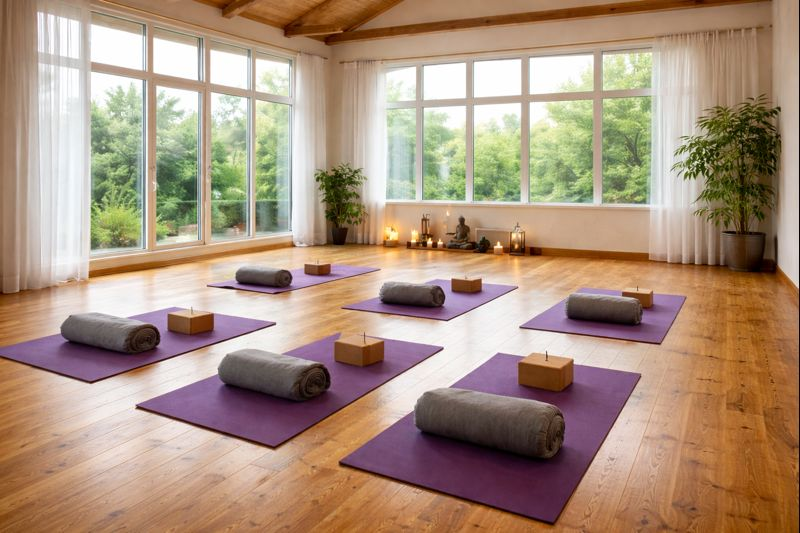
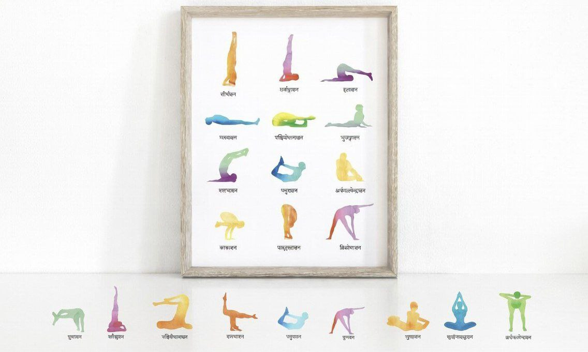
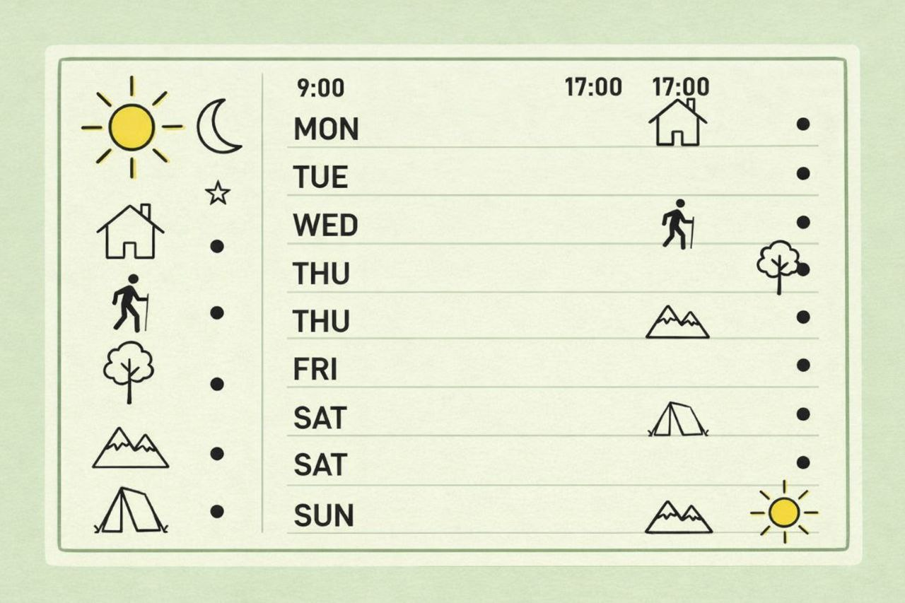

Ласкаво просимо до студії йоги «Баланс» — простору спокою, здоров’я та усвідомленого руху. Ми допомагаємо знайти внутрішню рівновагу та покращити самопочуття.
Ми створили простір, де тіло відновлюється, а думки сповільнюються. Невеликі групи, уважні наставники та практики, що справді працюють.
Індивідуальна увага на кожному занятті та корекція техніки.
Ранкові та вечірні практики, зручний ритм для вашого дня.
Перші заняття для початківців без стресу та перевантажень.

Затишний простір для відновлення, релаксу та розвитку тіла. Практики для початківців і досвідчених.
Перейти →
Хатха, віньяса, розтяжка, дихальні практики та медитація. Групові та індивідуальні формати.
Перейти →
Зручний графік занять на кожен день. Ранкові, денні та вечірні практики.
Перейти →Досвідчені наставники допоможуть вам освоїти практику, покращити гнучкість і знайти внутрішній баланс.
Перейти →Запис на заняття, питання або консультація. Ми завжди на зв’язку.
Перейти →Залиште заявку, і ми підберемо практику під ваш рівень та самопочуття.
Записатися